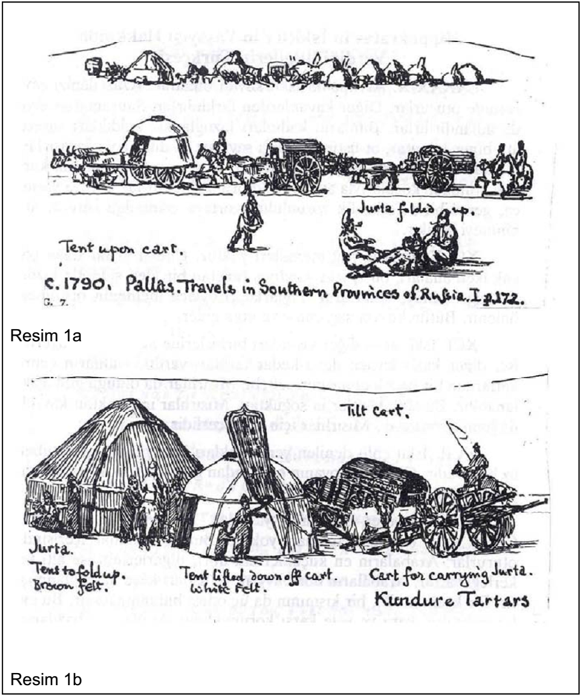

Levha 1

Resim 1a-b: Güney Rusya'da yaşayan türkler (yaklaşık 1790). Pallas'ın "Travels in Southern Provinces of Russia" adlı eserinden Minns aynen almıştır. (E.H. Mins, Scyhians and Greek, Vambridge, 1913, Resim 7).[181]